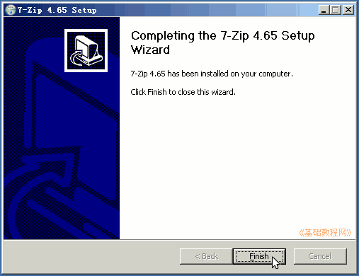

7-Zip 压缩软件基础
作者：TeliuTe 来源：基础教程网
压缩软件可以减小文件的体积，文件能够压缩的原因是，里面的数据有一定的规律，采用科学的方法存储，就能使文件体积减小，下面我们来看一个练习；
1、下载安装包
1）7-Zip 是一个免费的压缩软件，操作简便压缩比高，有各种语言包，
官方下载：http://www.7-zip.org
华军下载：http://www.onlinedown.net/soft/3610.htm
2）下载以后是一个可执行文件，文件名是7z开头，双击就可以运行安装包；
2、安装 7-zip
1）双击安装包，出现第一个安装界面，中间是安装位置，直接点下面的“Install”安装；
2）点安装按钮后开始安装，很快出来一个完成面板，点“Finish”按钮完成；

3、设置选项
1）安装完成后，点“开始菜单－所有程序－7-Zip”打开压缩程序的主窗口；
2）7-Zip 主窗口由菜单栏、工具栏、工作区组成，点菜单“工具－选项”，我们来进行一下简单设置；
3）在出来的选项面板中，打勾第一个 7z、下边的 rar 和最后的 zip，然后点下边的“应用”按钮，选中的类型可以直接双击打开；
4）再点上边的“插件”标签，在出来的面板里点右边的“插件选项”按钮；
5）在出来的面板里，去掉不常用的功能，减少右键菜单的数量，也可以不折叠，然后点“应用、确定”返回；
6）其他标签可以看一看，一般不用修改，点确定返回主窗口；
本节学习了下载安装 7-Zip 的基本方法，如果你成功地完成了练习，请继续学习下一课内容；
本教程由86团学校TeliuTe制作|著作权所有
基础教程网：http://teliute.org/
美丽的校园……
转载和引用本站内容，请保留作者和本站链接。